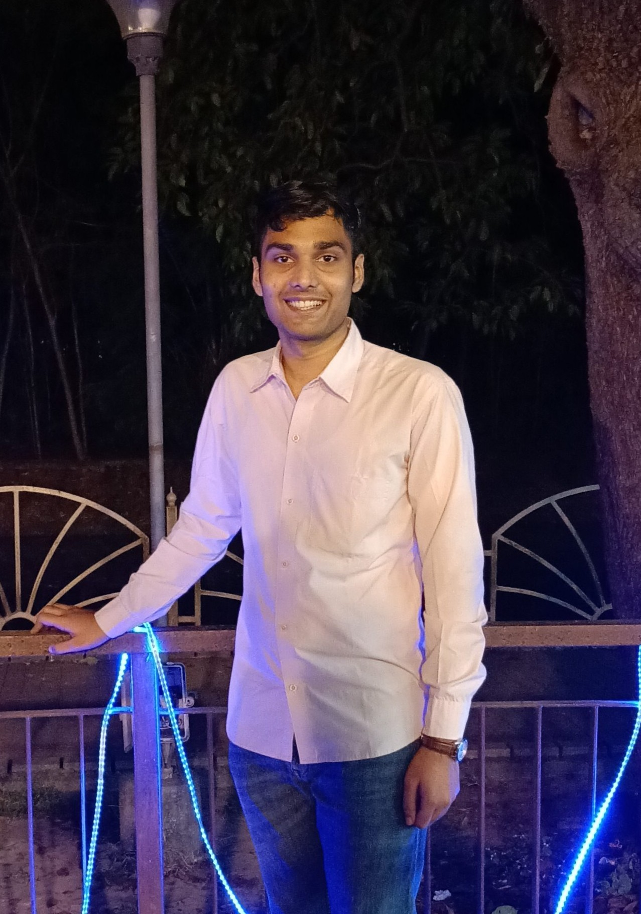

I am Ravishek Kumar, a Dual Degree student (B.Tech Mechanical & M.Tech Financial Engineering) at IIT Kharagpur (CGPA: 8.96/10). My work sits at the intersection of behavioral household finance, econometric analysis of large-scale survey data, and quantitative methods in financial markets — including time-series forecasting and sentiment-driven alpha generation.

An independent study of present bias and the co-holding puzzle among Indian households, using the CMIE Consumer Pyramids Survey. I engineered a reproducible Python and DuckDB pipeline to merge four survey modules into a panel of approximately 480,000 household observations (2025). Employing a gold-purchase placebo test to separate behavioral self-control from mechanical payroll deductions, I estimated weighted, household-clustered regressions and a permanent–transitory income decomposition — finding that consumption patterns are broadly consistent with the Permanent Income Hypothesis.
Bachelor's Thesis (supervised by Prof. Pawan Goyal) exploring whether NLP-derived sentiment signals can improve short-horizon return predictions for Nifty 50 stocks. I built a real-time pipeline ingesting financial news from nine sources into a DuckDB store, processed text using FinBERT to extract sentiment scores, and combined them with technical indicators to construct 17-dimensional feature vectors. An LSTM–Transformer ensemble with a custom directional loss function was trained to predict overnight returns, providing a systematic framework for news-based alpha generation.
A comparative study of statistical forecasting methods applied to monthly gold prices spanning 1950–2020. I evaluated GARCH, Holt-Winters, SARIMA, and moving average models using Python's statsmodels and ARCH libraries, performing stationarity tests, structural break detection, and volatility modeling. The 2-point moving average achieved the lowest MAPE of 1.23%, substantially outperforming more complex baselines — a finding that highlights the difficulty of beating simple benchmarks in commodity price prediction.
During my internship at Fidelfolio Investments (Mumbai), I designed an automated pipeline that generates institutional-grade mutual fund research reports and investment booklets end-to-end — integrating financial visualizations, performance tables, and narrative summaries into consistently structured PDFs. The system significantly reduced manual publication effort for long-term investment products. This work is documented in the industry paper "The Last Mile of Quantitative Research: Automating Charts, Narratives and PDF Publication."
Relevant coursework: Financial Econometrics, Regression & Time Series Models, Probability & Statistics, Market Microstructure, Derivatives & Risk Management, Portfolio Optimization, Advanced Calculus, Linear Algebra, Machine Learning, Big Data Analysis, Programming & Data Structures.
I am happy to discuss research, collaborations, or opportunities. The best way to reach me is by email.